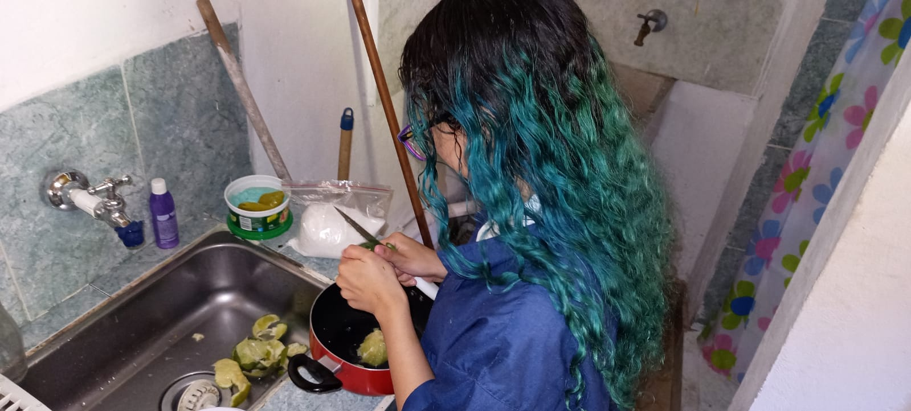

Vamos a dejar remojar los limones de 2 a 3 días antes para quitarle un poco la acidez
-Pelar los limones eliminando la cascara, las semillas y las partes blancas internas y externas; luego de exprimir los limones vamos a colar para evitar que semillas queden en el zumo y que se intregue la pulpa, pues esto puede provocar un sabor amargo mas adelante..
-En una olla echar los limones (totalmente limpios de partículas blancas) junto al azúcar y dejar cocinar a fuego bajo-medio.

-Ir revolviendo poco a poco durante la cocción.

-Al espesar, bajar del fuego y dejar reposar.
-Por último, envasar (en vidrio) y disfrutar.